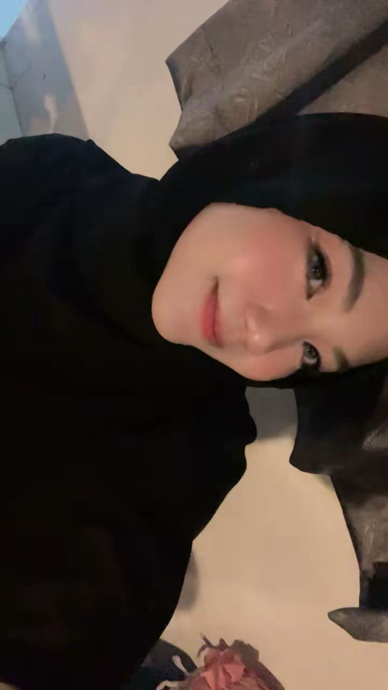

Foto Profil

📝 Tentang Saya
Halo! Perkenalkan nama saya Balqis Nabila Asyra. Saya lahir di
Mompang Julu pada tanggal 14 Februari 2007. Saat ini saya berkuliah
Software Developer di sebuah Universitas Muhammadiyah Sumatera Utara
Saya memiliki ketertarikan yang besar dalam bidang teknologi,
terutama web development dan artificial intelligence.
Saya selalu bersemangat untuk belajar hal-hal baru dan mengembangkan
keterampilan saya.
📋 Data Pribadi
- Nama Lengkap: Balqis Nabila Asyra
- Tempat, Tanggal Lahir: Mompang Julu, 14 Februari 2007
- Alamat: Jl. Alfalah 3 Ujung, Glugur Darat I, Medan Timur
- Status: Belum Menikah
- Agama: Islam
- Kewarganegaraan: Indonesia
🎨 Hobi & Minat
- Memasak
- Menonton Drama Korea dan Series
- Membaca Webtoon
🎓 Riwayat Pendidikan
-
SD Negeri Panyabungan (2012 - 2018)
Lulus dengan nilai rata-rata 9.0
-
MtsN 2 Mandailing Natal (2018 - 2021)
Lulus dengan nilai rata-rata 9.0
-
SMA Negeri 2 Plus Panyabungan (2021 - 2024)
Jurusan IPS, lulus dengan nilai rata-rata 9.0
-
Universitas muhammadiyah sumatera utara (2024 - 2028)
Jurusan Sistem Informasi, IPK 3.80/4.00
💻 Keterampilan
- Programming Languages: HTML, JavaScript, Python
- Database: MySQL, MongoDB, PostgreSQL
- Tools: Git, VS Code
- Languages: Indonesia (Native), English (Advanced)
💼 Pengalaman Kerja
📞 Kontak Saya
📱 Social Media
facebook |
Instagram
Twitter